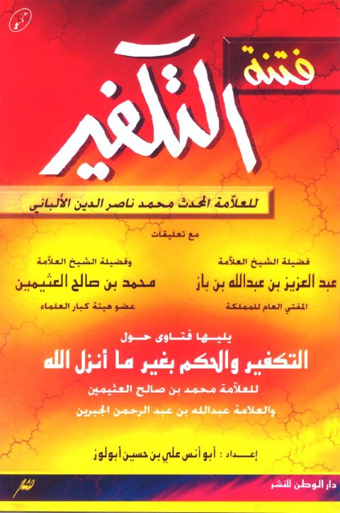
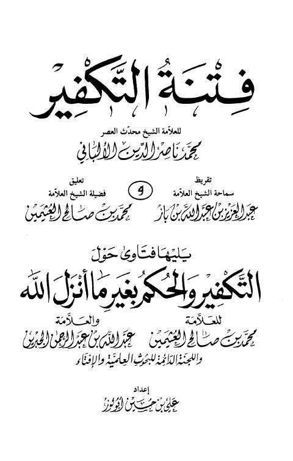
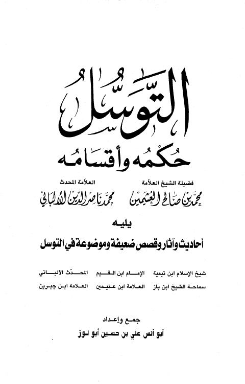

فتنة التكفير ويليه فتاوى حول التكفير والحكم بغير ما أنزل الله- دار الوطن فتنة التكفير ويليه فتاوى حول التكفير والحكم بغير ما أنزل الله- دار الوطن محمد ناصر الدين الألباني • محمد بن صالح العثيمين • عبد الله بن عبد الرحمن الجبرين
فتنة التكفير ويليه فتاوى حول التكفير والحكم بغير ما أنزل الله فتنة التكفير ويليه فتاوى حول التكفير والحكم بغير ما أنزل الله محمد ناصر الدين الألباني • محمد بن صالح العثيمين • عبد الله بن عبد الرحمن الجبرين
التوسل حكمه وأقسامه التوسل حكمه وأقسامه محمد بن صالح العثيمين • محمد ناصر الدين الألباني